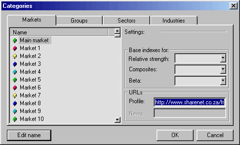

IMPORTANT: This document describes functionality that is PHASED OUT in version 4.90 and is now replaced by a superior WEB RESEARCH page.
AmiBroker has an embedded web browser allowing you to display company profiles from both local files and remote web pages providing appropriate information. The profiles are available from the Window->Profile menu and the toolbar. The example DJIA database supplied with AmiBroker is set up so the profile view displays the Yahoo Finance's profile web page for currently selected ticker. If you have, for example, selected 'KO' (Coca Cola Company) the http://biz.yahoo.com/p/K/KO.html profile web page will be displayed as shown in the picture below:
If you want to use this feature for non-US markets, additional steps are necessary to direct AmiBroker to the appropriate page. This article will describe how to do that.
Setting Profile URLs in Categories
Please go to the Symbol->Categories menu. After choosing this option you will see the window like this:

Please take a look at the URLs - Profile edit box. Here you can enter the URL template for viewing on-line (or off-line) company profiles. These URL templates are market-based, which means you can have different templates for each market. The template is then parsed to make the actual URL for the web page. For example, to see Yahoo's profiles page, you can use the following URL template:
http://biz.yahoo.com/p/{t0}/{t}.html.
Symbols enclosed in brackets {} define fields that are evaluated at execution time. The {t0} symbol is evaluated to the first character of the ticker name and {t} is evaluated to the whole ticker name. So if AAPL is selected, AmiBroker will generate the following URL from the above template:
http://biz.yahoo.com/p/a/aapl.html
Then AmiBroker uses its built-in web browser to display the contents of the page.
Special fields encoding scheme
As shown in the above example, the template URL can contain special fields that are substituted at run time by values corresponding to the currently selected symbol. The format of the special field is {x} where x describes the field type. Currently there are five allowable field types: ticker symbol in original case {t}, ticker symbol in lowercase {s}, ticker symbol in UPPERCASE {S}, alias {a}, web ID {i}. You can specify those fields anywhere within the URL, and AmiBroker will replace them with appropriate values entered in the Information window. You can also reference single characters of a ticker, alias, or web ID. This is useful when a given web site uses the first characters of, for example, a ticker to group the HTML files (Yahoo Finance site does that), so you have files for tickers beginning with 'a' stored in subdirectory 'a'. To reference a single character of the field, use the second format style {xn} where x is the field type described above and n is zero-based index of the character. So {a0} will evaluate to the first character of the alias string. To get the first two characters of a ticker, write simply {t0}{t1}. A note about the web ID field: this new field in the Information window was added to handle situations where web sites do not use ticker names for storing profile files. I found some sites that use their own numbering system, so they assign a unique number to each symbol. AmiBroker allows you to use this nonstandard coding for viewing profiles. All you have to do is to enter the correct IDs in the Web ID field and use an appropriate template URL with the {i} keyword.
Profiles stored locally
You may want to have all profiles stored on your local hard disk. This has the advantage that profiles are accessible instantly, but they can take a significant amount of storage space, and you will need to update them from time to time. To access locally stored files, use the following template URL (example: C: denotes drive): file://C:\the_folder_with_profile_files\{t}.html. You are not limited to HTML files; you can use simple .TXT files instead. Then create (or download) the .html (or .txt) files for each symbol in the portfolio. These files should obey the following naming convention: <ticker>.html. So, for example, for APPLE (ticker AAPL), the profile file should have the name AAPL.html (or AAPL.txt)
Web-based profiles
If you want to display the profiles from remote web pages, you will need to find out how they are accessible (the URL to the web page) and how the data for different symbols is accessible. I will describe the problem using the example of the Sharenet (www.sharenet.co.za) site, which provides data for companies listed on the Johannesburg Stock Exchange. Sharenet provides company information that is accessible at the following address (URL):
http://www.sharenet.co.za/free/free_company_na.phtml?code=JSECODE&scheme=default
The problem is that the database provided by Sharenet uses long ticker names, and JSECODE is a short symbol code. For example, for the "Accord Technologies" company, the ticker in the Sharenet database is ACCORD, but the code is ACR. To solve the problem, we will need to use the Web ID field in the symbol Information window. If you have the Sharenet database, just choose ACCORD from the ticker list, open the Symbol->Information window and enter ACR into the Web ID edit box, and click OK. Then please open the Symbol->Categories window and enter the following URL template into the Profile URL edit box:
http://www.sharenet.co.za/free/free_company_na.phtml?code={i}&scheme=default
To be 100% sure, please select the text above with a mouse. Then copy it to the clipboard (Edit->Copy, CTRL-C). Then switch to AmiBroker and click on the Profile URL edit box. Delete everything from it and press CTRL-V (this will paste the text).
Please note that we have used the {i} special field in the template, which will be replaced by AmiBroker with the text entered in the Web ID field of the symbol Information window. Now, please select Window->Profile, and you should see the profile for the ACCORD company in the bottom part of the AmiBroker screen.
Now, when the profile view for ACCORD is working correctly, all you have to do is enter JSE short codes into the Web ID field of the symbol Information window to enable profiles for all other symbols. It is easy to say, but much harder to do - with thousands of symbols, it is very time-consuming work; however, this task can be automated completely by using scripting and AmiBroker's OLE automation interface.